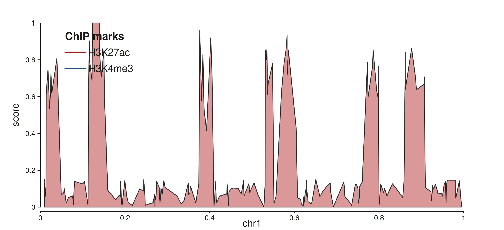
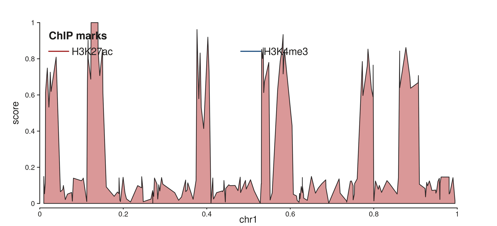
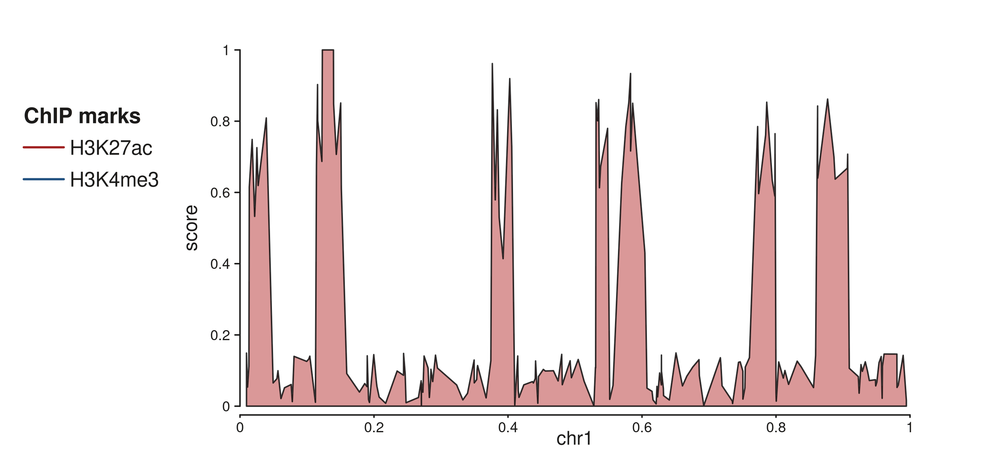
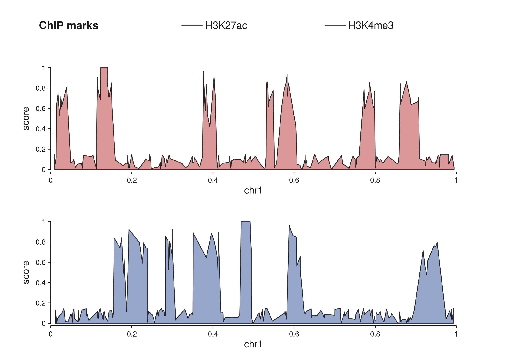
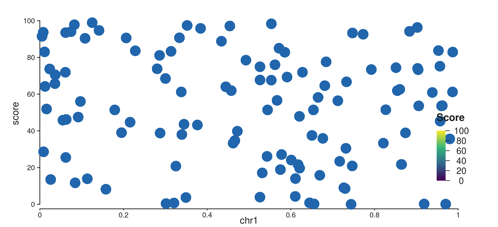
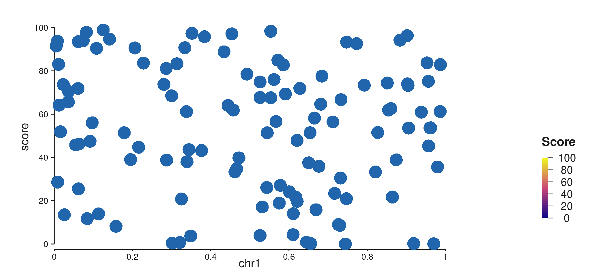
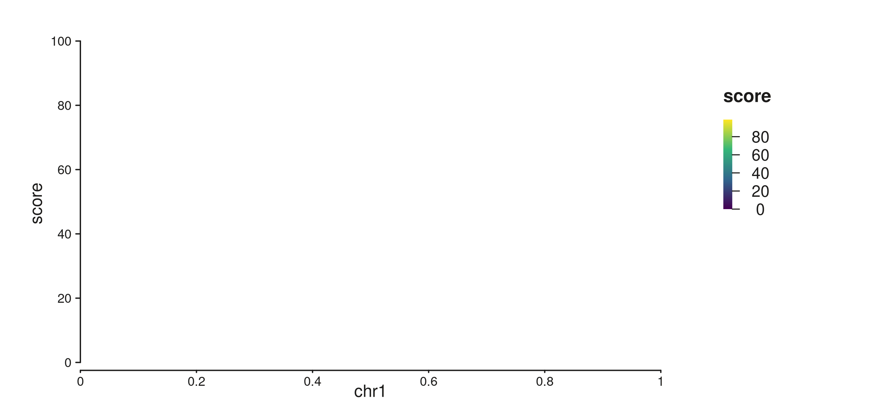
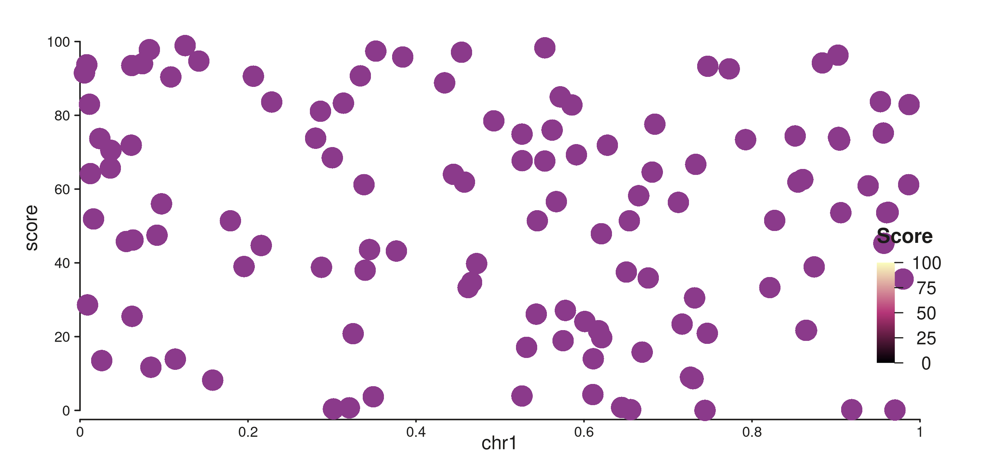

SeqPlotR attaches legend metadata directly to the elements that draw
the data. A LegendKey describes one glyph-plus-label row; a
SeqLegendSpec says where and how to lay those rows out. For
continuous color scales, seq_gradient_legend() produces a
GradientLegendSpec that renders as a filled color bar with
a tick axis. Three position families are supported:
| Position | Where it renders |
|---|---|
"inside" |
Overlaid on the data panel — no margin space required. |
"track_margin" |
In the canvas margin alongside a specific track. |
"canvas_margin" |
Aggregated from all tracks into one shared margin band. |
Data used in this vignette
library(SeqPlotR)
#>
#> Attaching package: 'SeqPlotR'
#> The following object is masked from 'package:base':
#>
#> %||%
library(GenomicRanges)
#> Loading required package: stats4
#> Loading required package: BiocGenerics
#> Loading required package: generics
#>
#> Attaching package: 'generics'
#> The following objects are masked from 'package:base':
#>
#> as.difftime, as.factor, as.ordered, intersect, is.element, setdiff,
#> setequal, union
#>
#> Attaching package: 'BiocGenerics'
#> The following objects are masked from 'package:stats':
#>
#> IQR, mad, sd, var, xtabs
#> The following objects are masked from 'package:base':
#>
#> anyDuplicated, aperm, append, as.data.frame, basename, cbind,
#> colnames, dirname, do.call, duplicated, eval, evalq, Filter, Find,
#> get, grep, grepl, is.unsorted, lapply, Map, mapply, match, mget,
#> order, paste, pmax, pmax.int, pmin, pmin.int, Position, rank,
#> rbind, Reduce, rownames, sapply, saveRDS, table, tapply, unique,
#> unsplit, which.max, which.min
#> Loading required package: S4Vectors
#>
#> Attaching package: 'S4Vectors'
#> The following object is masked from 'package:utils':
#>
#> findMatches
#> The following objects are masked from 'package:base':
#>
#> expand.grid, I, unname
#> Loading required package: IRanges
#> Loading required package: Seqinfo
# 1-Mb window; axis labels will read 0.0 – 1.0 (scaled by 1e-6)
win <- GRanges("chr1", IRanges(1, 1e6))
# Synthetic ChIP-seq signal: sparse background with 8 sharp peaks
make_chip <- function(n = 200, n_peaks = 8, seed = 1) {
set.seed(seed)
starts <- sort(sample(1:999000, n))
scores <- runif(n, 0, 0.15) # flat baseline
peaks <- sort(sample(seq_len(n), n_peaks))
for (pk in peaks) {
w <- max(1, pk - 3):min(n, pk + 3)
scores[w] <- scores[w] + runif(length(w), 0.4, 0.85)
}
GRanges("chr1", IRanges(starts, width = 1), score = pmin(scores, 1))
}
gr_a <- make_chip(seed = 1) # H3K27ac-like
gr_b <- make_chip(seed = 2) # H3K4me3-like
# Continuous-score data for gradient legend examples
set.seed(42)
n_pts <- 120
gr_cnt <- GRanges(
"chr1",
IRanges(sort(sample(1:999000, n_pts)), width = 1),
score = round(runif(n_pts, 0, 100), 1)
)1. Inside legends
Inside legends are overlaid directly on the data panel. They require no extra margin space.
Quick placement with a bare LegendKey
Pass a bare LegendKey to legend and it is
automatically wrapped into an inside legend centered in the panel
(x = 0.5, y = 0.5). No seq_legend() call is
needed:
p1 <- seq_plot() %+%
seq_track(data = gr_a, mapping = map(x = start, y = score),
windows = win) %+%
seq_area(
aesthetics = aes(fill = "#D08080", alpha = 0.8),
legend = LegendKey(label = "H3K27ac",
color = "#A02020", fill = "#D08080", shape = "-")
)
p1$plot()A bare LegendKey is auto-placed at the panel centre.
Controlling placement with seq_legend()
Use seq_legend() to pin the legend to a specific corner.
x and y are fractions of the panel width and
height; y = 0.95 places the anchor near the top:
k1 <- LegendKey(label = "H3K27ac", color = "#A02020", fill = "#D08080", shape = "-")
k2 <- LegendKey(label = "H3K4me3", color = "#205080", fill = "#8090C0", shape = "-")
spec_inside <- seq_legend(
list(k1, k2),
title = "ChIP marks",
position = "inside",
x = 0.02, # 2% from the left edge
y = 0.95, # 95% of the way up the panel
orientation = "vertical"
)
p2 <- seq_plot() %+%
seq_track(data = gr_a, mapping = map(x = start, y = score),
windows = win) %+%
seq_area(
aesthetics = aes(fill = "#D08080", alpha = 0.8),
legend = spec_inside
)
p2$plot()
seq_legend() anchors the legend to the top-left corner with a title.
Right-aligned horizontal layout
hjust = 1 right-aligns the key block;
orientation = "horizontal" puts all keys in one row:
spec_h <- seq_legend(
list(k1, k2),
title = "ChIP marks",
position = "inside",
x = 0.98, hjust = 1, # right-align
y = 0.95,
orientation = "horizontal"
)
p3 <- seq_plot() %+%
seq_track(data = gr_a, mapping = map(x = start, y = score),
windows = win) %+%
seq_area(
aesthetics = aes(fill = "#D08080", alpha = 0.8),
legend = spec_h
)
p3$plot()
Two keys in a horizontal row, right-aligned at the top.
2. Track-margin legends
"track_margin" draws the legend in the canvas margin
beside one specific track. Set side to choose the
edge and enlarge the matching plot margin so there is room to
render:
spec_tm <- seq_legend(
list(k1, k2),
title = "ChIP marks",
position = "track_margin",
side = "left",
orientation = "vertical",
x = 0.1, # fraction of margin width
y = 0.8 # fraction of margin height (0 = bottom, 1 = top)
)
p_tm <- seq_plot(
aesthetics = aes(margins = list(top = 0.03, bottom = 0.03,
left = 0.18, right = 0.03))
) %+%
seq_track(data = gr_a, mapping = map(x = start, y = score),
windows = win) %+%
seq_area(
aesthetics = aes(fill = "#D08080", alpha = 0.8),
legend = spec_tm
)
p_tm$plot()
Two-key vertical legend in the 18% left canvas margin beside the track.
orientation defaults to "vertical" for
side %in% c("left", "right") and "horizontal"
for top / bottom:
seq_legend(k1, position = "track_margin", side = "left")$orientation
#> [1] "vertical"
seq_legend(k1, position = "track_margin", side = "top")$orientation
#> [1] "horizontal"3. Canvas-margin legends (aggregated)
"canvas_margin" collects legend entries from all
tracks and renders them once, spanning the full width of the
chosen margin side. Keys from specs that share the same
title are merged under one heading.
Use %__% instead of %+% to stack the second
track below the first (direction = "under"). Without
stacking both tracks would sit side-by-side in a single row:
# Each spec carries the key for one track.
# The first spec's x / hjust controls alignment of the aggregated block.
spec_ca <- seq_legend(k1, title = "ChIP marks", position = "canvas_margin",
side = "top", x = 0.5, hjust = 0.5)
spec_cb <- seq_legend(k2, title = "ChIP marks", position = "canvas_margin",
side = "top")
p_cm <- seq_plot(
aesthetics = aes(margins = list(top = 0.12, bottom = 0.04,
left = 0.04, right = 0.04))
) %+%
seq_track(data = gr_a, mapping = map(x = start, y = score),
windows = win) %+%
seq_area(aesthetics = aes(fill = "#D08080", alpha = 0.8), legend = spec_ca) %__%
seq_track(data = gr_b, mapping = map(x = start, y = score),
windows = win) %+%
seq_area(aesthetics = aes(fill = "#8090C0", alpha = 0.8), legend = spec_cb)
p_cm$plot()
Two stacked tracks sharing a single canvas-margin legend at the top.
When track titles differ, canvas_margin inserts a
separator between groups. Here the two tracks use different titles to
show the grouping:
spec_ca2 <- seq_legend(k1, title = "Active enhancers",
position = "canvas_margin", side = "top",
x = 0.5, hjust = 0.5)
spec_cb2 <- seq_legend(k2, title = "Promoters",
position = "canvas_margin", side = "top")
p_cm2 <- seq_plot(
aesthetics = aes(margins = list(top = 0.14, bottom = 0.04,
left = 0.04, right = 0.04))
) %+%
seq_track(data = gr_a, mapping = map(x = start, y = score),
windows = win) %+%
seq_area(aesthetics = aes(fill = "#D08080", alpha = 0.8), legend = spec_ca2) %__%
seq_track(data = gr_b, mapping = map(x = start, y = score),
windows = win) %+%
seq_area(aesthetics = aes(fill = "#8090C0", alpha = 0.8), legend = spec_cb2)
p_cm2$plot()Two title groups separated in the canvas margin.
4. Gradient color bars
Continuous color scales need a color bar rather than discrete key
rows. seq_gradient_legend() produces a
GradientLegendSpec that renders as a filled rectangle
graded from the palette’s low to high color, with a tick-and- label axis
derived from the data limits.
The placement arguments (position, x,
y, hjust, orientation,
side) work identically to seq_legend().
Manual color bar inside the panel
grad_inside <- seq_gradient_legend(
palette = "viridis",
limits = c(0, 100),
title = "Score",
position = "inside",
x = 0.97, # near the right edge
y = 0.5, # vertically centred
hjust = 1,
orientation = "vertical"
)
p_gi <- seq_plot() %+%
seq_track(data = gr_cnt, mapping = map(x = start, y = score),
windows = win) %+%
seq_point(
aesthetics = aes(color = "#2166AC", size = 1.2),
legend = grad_inside
)
p_gi$plot()
Vertical viridis color bar pinned to the right side of the panel.
Color bar in the track margin
Place the bar in the right track margin for a clean separation from the data:
grad_tm <- seq_gradient_legend(
palette = "plasma",
limits = c(0, 100),
title = "Score",
position = "track_margin",
side = "right",
orientation = "vertical",
x = 0.5,
y = 0.5
)
p_gtm <- seq_plot(
aesthetics = aes(margins = list(top = 0.03, bottom = 0.03,
left = 0.03, right = 0.20))
) %+%
seq_track(data = gr_cnt, mapping = map(x = start, y = score),
windows = win) %+%
seq_point(
aesthetics = aes(color = "#2166AC", size = 1.2),
legend = grad_tm
)
p_gtm$plot()
Horizontal plasma color bar in the right track margin.
Auto-legend from map()
When a continuous column is mapped via map() on a
supported element (SeqBar, SeqLine,
SeqArea, SeqPoint, SeqSegment,
SeqTile, SeqRect), a
GradientLegendSpec is generated automatically — no
seq_gradient_legend() call is needed. The bar defaults to
position = "track_margin", side = "right".
Pass show_legend = FALSE to opt out for a specific
element:
p_auto <- seq_plot(
aesthetics = aes(margins = list(top = 0.03, bottom = 0.03,
left = 0.03, right = 0.20))
) %+%
seq_track(data = gr_cnt, mapping = map(x = start, y = score),
windows = win) %+%
seq_bar(
mapping = map(fill = score),
aesthetics = aes(alpha = 0.9)
# show_legend = FALSE # uncomment to suppress the auto bar
)
p_auto$plot()
Auto color bar from map(fill = score); no seq_gradient_legend() needed.
Controlling tick breaks
breaks accepts three forms:
-
NULL(default) —pretty()with five ticks. - A single integer —
pretty()targeting that many ticks. - A numeric vector — exact break values.
grad_breaks <- seq_gradient_legend(
palette = "magma",
limits = c(0, 100),
breaks = c(0, 25, 50, 75, 100),
title = "Score",
position = "inside",
x = 0.97,
y = 0.5,
hjust = 1,
orientation = "vertical"
)
p_brk <- seq_plot() %+%
seq_track(data = gr_cnt, mapping = map(x = start, y = score),
windows = win) %+%
seq_point(
aesthetics = aes(color = "#8B3A8B", size = 1.2),
legend = grad_breaks
)
p_brk$plot()
Color bar with explicit breaks at 0, 25, 50, 75, 100.
5. Suppression
Legends can be silenced at three granularities. Each level overrides all finer-grained settings below it.
Element level
show_legend = FALSE on one element silences only that
element, leaving others in the same track unaffected:
el_shown <- seq_area(legend = LegendKey(label = "Foreground"))
el_hidden <- seq_area(legend = LegendKey(label = "Background"),
show_legend = FALSE)
is.null(el_shown$collect_legend_keys()) # FALSE — contributes
#> [1] FALSE
is.null(el_hidden$collect_legend_keys()) # TRUE — suppressed
#> [1] TRUEThis also suppresses auto-generated gradient bars:
Track level
show_legend = FALSE on a seq_track()
silences every element in that track, regardless of individual element
settings:
Plot level
Pass show_legend = FALSE (or the shorthand
legend = FALSE) to seq_plot() to suppress all
legend output for the entire plot, including auto-generated gradient
bars:
p_no_legend <- seq_plot(legend = FALSE) %+%
seq_track(data = gr_a, mapping = map(x = start, y = score),
windows = win) %+%
seq_area(
aesthetics = aes(fill = "#D08080", alpha = 0.8),
legend = spec_inside # spec defined earlier — ignored here
)
p_no_legend$plot()legend = FALSE on seq_plot() removes all legend output.
6. Inspecting legend metadata:
collect_legend_keys()
collect_legend_keys() aggregates legend entries from an
element, a track, or (transitively) all tracks in a plot. It returns
NULL when nothing contributes, or a list of named
lists:
| Field | Content |
|---|---|
title |
Group heading (from LegendKey$title or
SeqLegendSpec$title). |
key |
The LegendKey object. |
element_class |
R6 class name of the contributing element. |
k <- LegendKey(label = "ChIP signal", title = "Tracks", color = "darkgreen")
el <- seq_area(legend = k)
str(el$collect_legend_keys()[[1]])
#> List of 3
#> $ title : chr "Tracks"
#> $ key :List of 9
#> ..$ label: chr "ChIP signal"
#> ..$ title: chr "Tracks"
#> ..$ color: chr "darkgreen"
#> ..$ shape: chr "-"
#> ..$ size : num 1
#> ..$ alpha: num 1
#> ..$ fill : NULL
#> ..$ lty : num 1
#> ..$ extra: list()
#> ..- attr(*, "class")= chr "LegendKey"
#> $ element_class: chr "SeqArea"Track-level aggregation flattens all element entries:
el1 <- seq_area(legend = LegendKey(label = "H3K27ac", color = "#A02020"))
el2 <- seq_area(legend = LegendKey(label = "H3K4me3", color = "#205080"))
trk <- seq_track(windows = win, elements = list(el1, el2))
keys <- trk$collect_legend_keys()
cat(length(keys), "keys from track:\n")
#> 2 keys from track:
for (entry in keys)
cat(" ", entry$key$label, "—", entry$element_class, "\n")
#> H3K27ac — SeqArea
#> H3K4me3 — SeqAreaSummary
| Task | How |
|---|---|
| Attach a legend, auto-placed at panel centre | seq_area(legend = LegendKey(...)) |
| Anchor to a specific corner | seq_legend(keys, position="inside", x=, y=) |
| Draw beside one track |
seq_legend(keys, position="track_margin", side=) +
enlarge that margin |
| Aggregate from all tracks into one band | seq_legend(keys, position="canvas_margin", side=) |
| Add a continuous color bar (manual) | seq_gradient_legend(palette=, limits=, ...) |
| Add a continuous color bar (auto) |
map(fill = score) or map(color = score) on
any supported element |
| Suppress one element | seq_area(show_legend = FALSE) |
| Suppress a whole track | seq_track(show_legend = FALSE) |
| Suppress the entire plot |
seq_plot(legend = FALSE) or
seq_plot(show_legend = FALSE)
|
| Inspect what will be shown |
element$collect_legend_keys() /
track$collect_legend_keys()
|
position |
Best for |
|---|---|
"inside" |
Single-track plots; compact per-track annotation |
"track_margin" |
When you want to keep the data area clean on one track |
"canvas_margin" |
Multi-track plots with a shared legend group |
Gradient legend quick reference
| Argument | Effect |
|---|---|
palette |
"viridis", "plasma", "magma",
"blues", "reds"
|
limits |
Data range the gradient spans, e.g. c(0, 100)
|
breaks = NULL |
Auto ticks via pretty() (default) |
breaks = 5L |
Request 5 ticks via pretty()
|
breaks = c(0,50,100) |
Exact tick positions |
orientation = "vertical" |
Tall bar with right-side axis |
orientation = "horizontal" |
Wide bar with bottom axis |